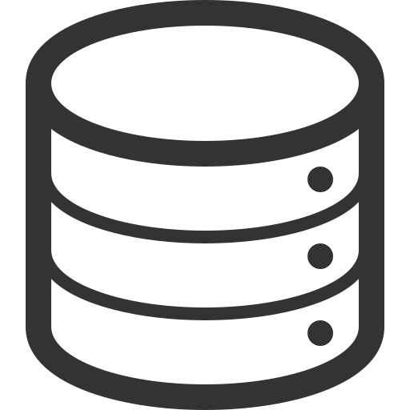
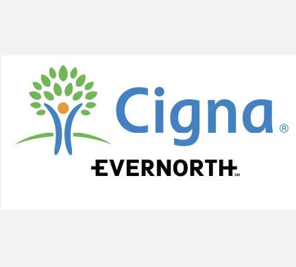
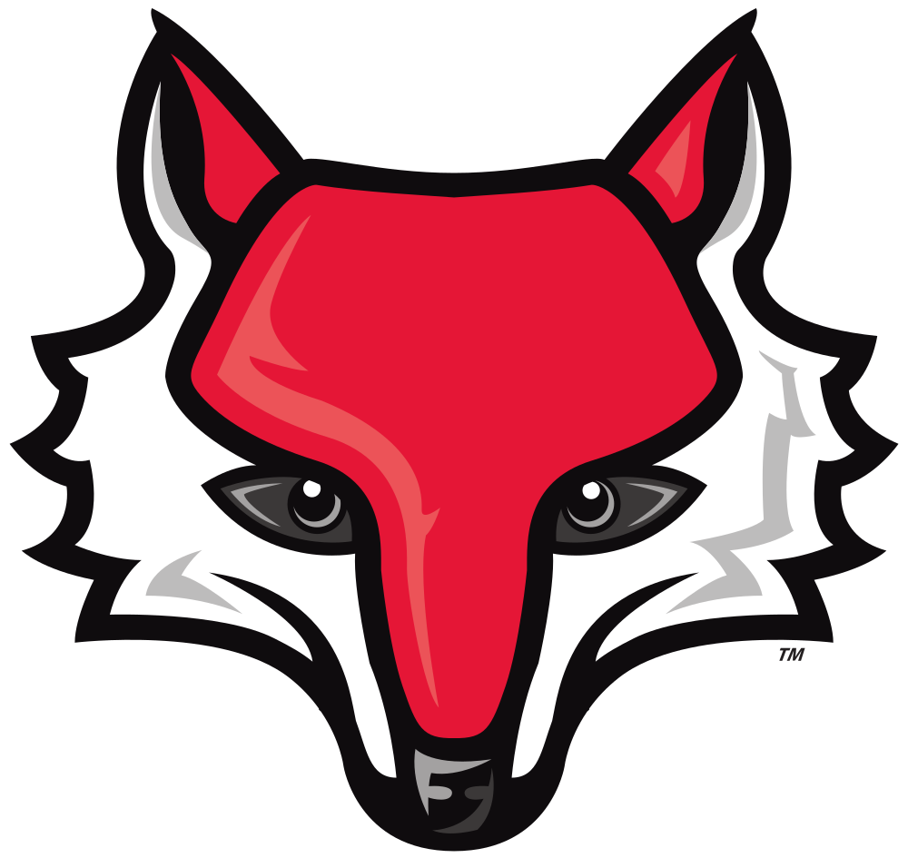
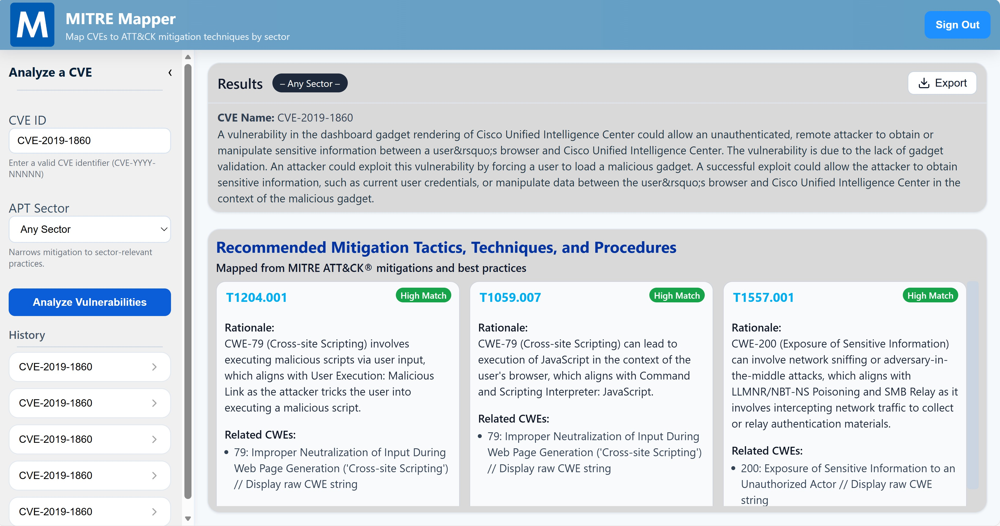
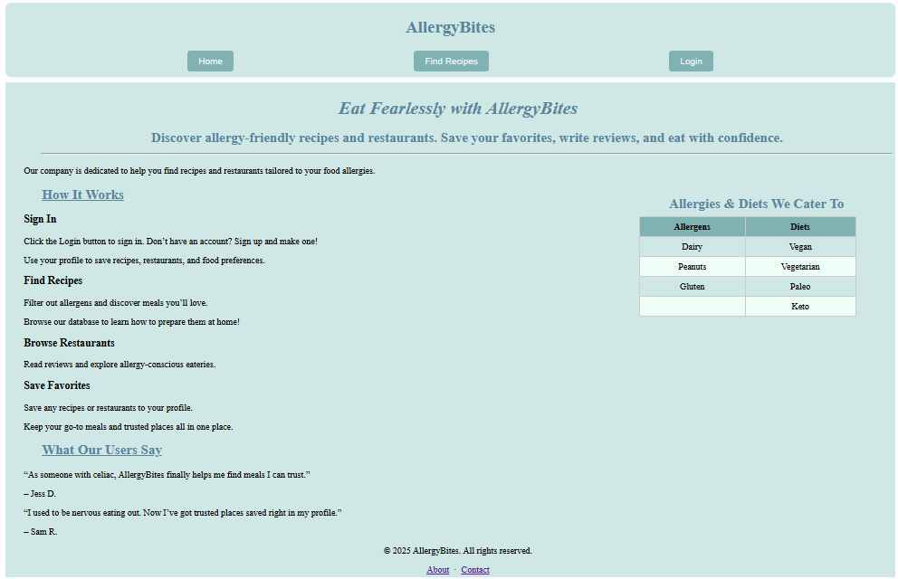
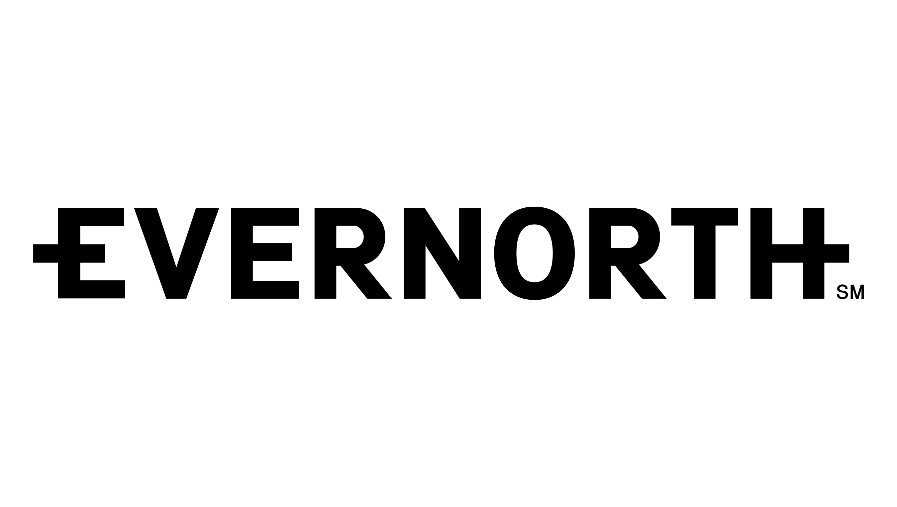
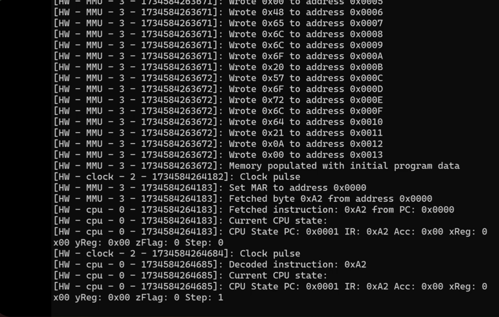

Quick Bio
Marist CS student (Software Development concentration) with minors in IT, Information Systems, and Games & Emerging Media.
I’m a Computer Science student at Marist University graduating in the Class of 2026 focused on building user-friendly web applications and turning data into clear insights. I’ve worked in healthcare analytics and full-stack development, and I love shipping practical tools that solve real problems.
A concise overview, then a deeper dive below.
Marist CS student (Software Development concentration) with minors in IT, Information Systems, and Games & Emerging Media.
Full-stack development, database-backed systems, data analysis. Typical stack: React, Node, SQL, PostgresSQL, TypeScript, JavaScript and REST APIs.

I’m interested in building practical tools that make data more useful. My background in healthcare analytics helped me develop strong skills in automation, accuracy, and team-based problem solving.
I’m a Computer Science student at Marist University with experience in software development and analytics. Through internships and projects, I’ve worked with tools like SQL, Alteryx, and cloud platforms to improve data workflows and build full-stack web applications with secure authentication and solid database design. I enjoy turning complex ideas into practical, easy-to-use solutions and building systems that actually work for the people using them. Outside of class, I like staying involved and taking on leadership roles. I studied abroad in Ireland last year, which pushed me to adapt quickly and see problems from a different perspective. I was also a member of the men’s volleyball team at Marist and later served as the team’s manager and treasurer, where I handled organization, budgeting, and behind-the-scenes operations. Whether I’m working on a project or supporting a team, I value collaboration, accountability, and continuous learning.
My professional and academic experience.

Automated and validated large datasets using Alteryx and internal databases, improving reporting speed and accuracy for client-facing analytics packages.

Provided one-on-one tutoring across multiple subjects, adapting explanations to different learning styles and helping students build confidence and consistency.
Managed high-volume technical printing workflows for engineering documents, coordinating with teams to deliver accurate, deadline-driven outputs.
Selected work from classes and personal projects. (More on GitHub!)
Converted a console-based vulnerability prioritization tool into a web dashboard and enhanced CVE-to-threat mapping with RAG techniques to improve security decision-making.

A full-stack web application that helps users with dietary restrictions (e.g. vegan, gluten-free, dairy-free) find recipes and restaurants tailored to their needs.

Automated manual reporting steps and verified large datasets to increase delivery speed and improve accuracy in client-facing analytics packages.

The system accepts 6502 op-code programs and runs them through a simulated CPU pipeline, including fetch, decode, execute, write-back, and interrupt handling stages. This project deepened my understanding of low-level processor design, instruction sets, and the relationship between hardware architecture and software.

Let’s connect — email or find me here.